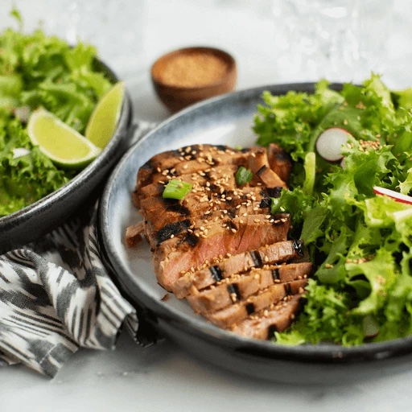

Ahi Tuna Steak
Ahi Tuna Steaks

Seared ahi tuna steaks
Ahi tuna is a fast easy to cook dinner option. Tuna is very healthy and being one of the fatty fishes it contains good cholesterol and other essential fats. This makes it a great alternative dinner option to red meats. Similar to steak it can be cooked to different levels such as rare, medium or well done.
Ingredients
- 2 ahi tuna steaks (about 1/2 lb each)
- 2 Tbsp soy sauce
- 1 Tbsp sesame oil
- 1 Tbsp honey
- black pepper to taste
- sesame seeds for garnish
Steps
- Pat tuna steaks dry with a paper towel and place in a container or zip-top bag.
- In a small bowl, whisk together soy sauce, sesame oil, honey and black pepper. Pour mixture over tuna steaks and allow to marinate for at least 10 to 15 minutes, or up to overnight in the refrigerator.
- Preheat grill to medium high heat. Oil grates, then place steaks on grill and sear for about 3 minutes on each side or until cooked to desired doneness. Remove from grill and allow to rest for 5 minutes.
- Cut steaks into slices and garnish with sesame seeds and green onions as desired. Serve immediately.